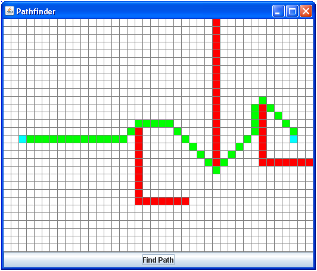

Задание #3. Алгоритм A*
Если вы когда-либо играли в компьютерную игру с картой, вероятно, вы видели управляемые компьютером объекты, способные самостоятельно добраться из пункта A в пункт B. Эта задача, довольно часто встречающаяся как в играх, так и в программах, написанных для других целей, заключается в поиске маршрута из начальной точки в пункт назначения, обходящего имеющиеся на карте препятствия.
Один из наиболее известных алгоритмов решения этой задачи называется A* (произносится "A-звезда"). Это очень эффективный алгоритм, применяемый для поиска маршрутов в компьютерных программах. Концептуально это очень простой алгоритм. От начала маршрута, алгоритм постепенно строит путь к конечной точке, на каждом шаге выбирая лучший маршрут "на данный момент". Таким образом, окончательный маршрут также будет наилучшим. (Если вы желаете подробнее изучить алгоритм поиска маршрута A*, можете начать со статьи в Википедии (http://ru.wikipedia.org/wiki/Алгоритм_поиска_A*), и продолжить изучение, по ссылкам, которые там приведены.)
Здесь к счастью вам не надо самим реализовывать алгоритм A*; это для вас уже сделано. Фактически у вас даже есть небольшой и красивый пользовательский интерфейс для экспериментов с алгоритмом A*:

По клеткам можно кликать мышью, превращая их в барьеры (красные) или разрешенные для прохода клетки (былые). Голубым цветом обозначаются клетки начала и конца маршрута. Кнопка "Find Path" запускает вычисление маршрута с помощью алгоритма A*, и затем отображает его зеленым цветом. Или, если прохода нет, программа не отображает ничего.
Для реализации алгоритма A* необходимо отслеживать много различной информации, и классы коллекций Java прекрасно подходят для этой цели. Есть два типа информации, которую необходимо контролировать в процессе вычисления алгоритма A*:
В процессе вычисления маршрута, алгоритм A* должен использовать две основные коллекции точек маршрута:
Каждая итерация алгоритма A* выглядит очень просто: в списке открытых точек маршрута находим точку с наименьшей стоимостью маршрута, делаем шаги во всех направлениях из этой точки для того чтобы создать новые открытые точки маршрута, и затем перемещаем эту точку маршрута из списка открытых в список закрытых точек. Эта операция повторяется до тех пор пока текущая точка маршрута не окажется точкой конца маршрута! Если, в процессе работы алгоритма, открытые точки заканчиваются, маршрута между начальной и конечной точками не существует.
Эти вычисления зависят главным образом от позиций точек маршрута, следовательно, полезно хранить точки маршрута в ассоциативном списке, связывающем позиции точек с соответствующими точками маршрута. Используем контейнер java.util.HashMap для каждой из этих коллекций. Ключами в нем будут объекты Location(позиция), а значениями объекты Waypoint (точки маршрута).
Перед началом работы
Перед тем как приступить к работе, загрузите файлы исходных кодов этой лабораторной работы:
Заметим что приложение запускается само по себе без каких либо действий с вашей стороны, но функции вычисления маршрута заработают только после того как вы закончите эту лабораторную работу.
Вам требуется внести изменения в текст двух классов: Location и AStarState. Все остальное это код оболочки Swing который позволяет вам редактировать карту и отображает маршрут рассчитанный алгоритмом. (Если вы увлеклись и начали, чтобы заставить программу работать, редактировать другие исходные файлы, остановитесь и обратитесь за помощью!)
Позиции (класс Location)
Следует начать с подготовки класса Location для использования внутри классов коллекций Java. Так как в этой работе используются хэш контейнеры, для этого требуется:
Добавьте эти методы к классу Location, следуя шаблону внутри класса. После компиляции, класс Location можно использовать как тип ключа в хэш контейнерах, таких как HashSet и HashMap.
Состояние A* (Класс AStarState)
Как только класс Location будет готов для использования в качестве ключа, завершите реализацию класса AStarState. Этот класс содержит множества открытых и закрытых точек маршрута, и обеспечивает базовые функционал для реализации алгоритма A*.
Повторим, что состояние A* включает две коллекции точек маршрута, одну для открытых точек и другую для закрытых точек. Для упрощения алгоритма, точки маршрута будут храниться в ассоциативном хэш списке , в котором ключами будут позиции а значениями точки маршрута. Мы приходим к такому типу:
HashMap<Location, Waypoint>
(Очевидно, что каждая позиция может иметь только одну, связанную с ней, точку маршрута. Это как раз то, что нам нужно.)
Добавьте два (не статических) поля этого типа к классу AStarState. Одно для открытых точек маршрута, другое для закрытых. Не забудьте проинициализировать оба поля так, чтобы они указывали на новые пустые коллекции.
После того как поля добавлены и правильно проинициализированы, следует добавить следующие методы к классу AStarState:
public int numOpenWaypoints()
Этот метод должен просто возвращать число элементов в коллекции открытых точек маршрута. (Да, это делается в одну строчку...)
public Waypoint getMinOpenWaypoint()
Эта функция должна перебирать все элементы в коллекции открытых точек маршрута и возвращать ссылку на точку с наименьшим значением стоимости маршрута. Если в коллекции нет элементов, метод должен возвращать null.
Не удаляйте точку из коллекции, возвращая ее; верните только ссылку на точку с минимальной стоимостью маршрута.
public boolean addOpenWaypoint(Waypoint newWP)
Это самый сложный метод класса состояния A*, но по правде говоря, его реализация довольно проста. Сложнее других его делает то, что в нем надо добавить новую точку маршрута, если существующая точка маршрута в позиции “хуже” чем новая. Вот что должен делать метод:
Здесь, как видно, требуется найти точку маршрута в коллекции открытых точек и, если она там присутствует, возможно, заменить ее. К счастью это очень просто делается с помощью метода HashMap.put(), который заменяет старую ассоциацию ключ-значение на новую.
Метод должен возвращать true, если в коллекцию попадает новая точка маршрута, и false если этого не происходит.
public boolean isLocationClosed(Location loc)
Эта функция возвращает true если указанная позиция имеется в коллекции закрытых точек маршрута, иначе false. Так как зарытые точки хранятся в ассоциативном хэш списке в котором позиция это ключ , сделать такой метод очень просто.
public void closeWaypoint(Location loc)
Эта функция перемещает точку маршрута из коллекции открытых точек в коллекцию закрытых точек. Так как точку можно найти по ее позиции, методу передается позиция точки.
Процесс перемещения точки выглядит так:
Компиляция и тестирование
Закончив реализацию перечисленных функций, запустите программу поиска маршрута, чтобы убедиться в том, что она работает. Если вы все сделали правильно, не должно быть проблем с созданием препятствий на карте и поиском пути вокруг них.
Программу можно откомпилировать и запустить как обычно командами:
javac *.java java AStarApp
Если вы убедили себя в том, что программа работает корректно, отправьте ее на проверку!
Copyright (C) 2015, California Institute of Technology. All rights reserved.